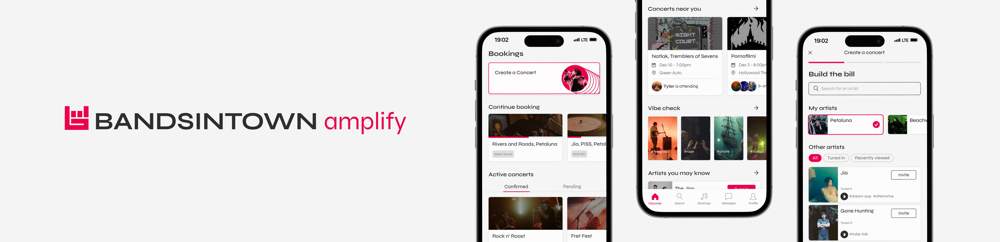

Bandsintown Amplify
UX/UI Design, User Research, Product Design, Mobile
A live music booking and networking platform for artists and venues. Streamlining the processes required to create a live show, Bandsintown Amplify provides artists and venues an efficient and direct communication channel when booking.

×

My Role
- Visual Designer
- UX Researcher
- Usability Testing
- Research Synthesis
Team
- Kathy Datsky
- Kezia Taufiq
- Harry Shiu
- Jalene Pang
Duration
- 7 weeks - Fall 2024
Project Overview
This project was a part of an advanced level course that examines design practice of Interaction and User Experience Design. I was mainly responsible for the experimental visual direction, interactions, and prototyping as one of the visual designers of the team. Below is an advertising video I made for our intervention:
Choosing our Domain and Client
We began the project by identifying a group of individuals within a specific sector who had unmet needs, goals, and challenges, and from there choosing a client that can deliver our solution for that group's need.
Our team dedicated significant time to this initial phase, conducting in-depth research across more than 30 domains spanning various industries within three weeks. We continuously refined our focus, striving to define the ideal experience problem that would lead to a compelling design project. During the process, I discovered the financial struggles local music venues faced after COVID-19 and brought the issue to the team. Ultimately, we chose to tackle the challenges faced by local music artists and small venues, and our chosen client is Bandsintown.
The Importance of local music scene
Smaller venues have proved to be essential for emerging artists and the surrounding communities. Therefore, governments, people in power as well as music fans should now do their utmost to safeguard the spaces that have been a lifeline for artists and a cultural force for society as a whole.”
- James Calvin Thompson, Guilt & Company (2017)
Target Audiences
Local Artists
To better understanding the target audience's goals and challanges, I did some research on recent peer review articles on the current situation of Canada's local music scene. The papers mainly focus on issues within main cities including Toronto and Vancouver.
Local independent artists handle their own music production, promotion, and networking. Engaging with their local scene can facilitate opportunities with artists, venues, and other scene participants.
Challenges Artists have to handle their own booking and promotion. A lack of connection to booking processes makes it difficult to connect to other artists and venues.
Behaviours Artists reach out to other artists to build a bill on Instagram. After accommodating all participating musicians’ schedules, an email is sent to the chosen venue to request to perform.
Needs Getting involved in the local music scene through performing at local venues. Through engaging with others at shows, they look to connect with peers to form more creative opportunities.

Small venues
“...the importance of smaller venue tours is higher than ever. Yet these small venues are most at risk. Bigger live music companies and venues have access to bridge financing that will get them through the tough times, but smaller ones do not.”
- Mark Mulligan, founder of MiDiA Research
Small venues accommodate local music scenes, serving as important spaces for artists to progress through their careers. Their value as social hubs and niche spaces of cultural production becomes an important ‘stepping-stone’ for building musicians’ careers.
Small venues lack the resources of larger venues, including a dedicated booking agent. The role of the booking agent is to discover, review, and book artists to perform at their venue.
Why is Bandsintown?
Bandsintown is a live music discovery platform with a mission of connecting the world through live music. Bandsintown aims to foster discovery of live music for fans, and empower artists and venues in promoting their shows.

“Bandsintown’s ethos is independent at the core, serving artists since day 1 of their journey. Independent venues shed light on those artists early in their career.”
- Fabrice Sergent, Co-Founder & Managing Partner, Bandsintown Group

Bandsintown's Business Problem
“In this case, we had our own problem to fix — we kept missing bands.”
- Julien Mitelberg, COO & Managing Partner, Bandsintown Group
Currently, the Bandsintown platform focuses on promotions catering mainly to artist-to-fan interactions, with less emphasis on the crucial booking steps and the connection between artists and venues that occur before a show is organized and scheduled.
By providing additional services to venues and artists, Bandsintown can extend its services beyond promotions and into the greater live music discovery ecosystem, enhancing the value of the platform for venues and artists.
Framing
How might we strengthen and streamline the connection and concert creation processes for local artists and small venues in order to reinforce the local music scene’s ability to facilitate creative opportunities?
Testing concept
Interviews with local Vancouver artists
Our primary objective was to explore the booking experience from the artist’s perspective. We interviewed 4 local music artists to understand their current process, the challenges they face, and determining whether our proposed intervention would address their needs and add value.
“Right now its really about knowing the right people... There are people who want to play shows but don't know about the process or how to access the process”
-Participant 3, Local Vancouver musician
Insights from the interviews
Booking Experience:
- Pre-show and post-show touch points are equally—if not more—important for small artists and venues in organizing a successful live show, yet its never fully addressed on the platform.
- Through the interviews, we learned that the common booking process starts from artists forming a “bill” themselves, which is a list of artists that are going to perform, and send the bill to venues for approval.
- However, this process requires the artists going back and forth and have to managing connecting with every single band in the bill and venues, on top of their music practices.
Networking in the Local Music Scene:
- Through our interviews, it became clear that connections are not just important—they're everything.
- Networking plays a crucial role in securing gigs, collaborating with other artists, and gaining visibility in the community, often determining the success or stagnation of an artist’s career at the local level.
Our Intervention
Bandsintown Amplify, is a live music booking and networking platform for artists and venues. Streamlining the processes required to create a live show, Bandsintown Amplify provides artists and venues an efficient and direct communication channel when booking.

Artist: Artist Engagement
Discover, connect, and stay up to date with others in your music scene. 'Tune in' to fellow artists and venues to follow and engage with the community.
Booking
A streamlined, accessible, and transparent guided booking process. Tailoring to preferences, artists can view and invite other artists.
When building a bill, invitation buttons appear grey to indicate that the invite is not yet confirmed by the invitee.
Booking: Artist Profile
Empowers artists to discover other talent, explore their music through Spotify integration, and determine if a collaboration is the right fit.
Booking: Scheduling
Simplified scheduling by syncing the calendars of all individual artists on the bill with the venue’s open slots, recommending the best time and reducing the workload of the bill creator.
Booking: Venue Profile
Explore venue amenities essential for live performances and assess if it is the right fit for an artist’s next show.
Venue POV: View Requests
For venues, make informed booking decisions by viewing artist booking requests. All necessary information is aggregated in one place including music samples, performance videos, and organizational information.
Email Integration
An accessible process that seamlessly integrates with existing email clients, ensuring a smooth transition before fully onboarding to Bandsintown Amplify.

Reflection
This was definitely the most impressive and demanding project I've ever worked on, especially considering that all of the visual direction, interaction design, and prototyping occurred within two weeks, with the final week in which we transitioned entirely from a website version to a mobile version after discovering that artists primarily use mobile devices to form gigs with each other.
As one of the lead visual designers, I was responsible for creating the UI components of the work you see above. This project taught me a lot about the design process and research. As our first experience design project, our group struggled to identify the right problems to tackle and to pair them with research that would drive effective solutions. It reinforced the importance of not designing in isolation and of challenging every assumption through research-driven insights.